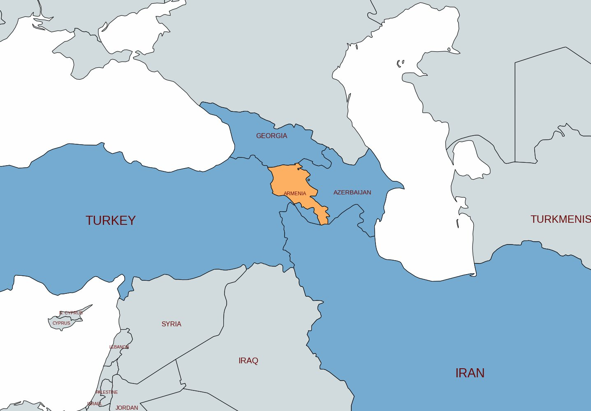
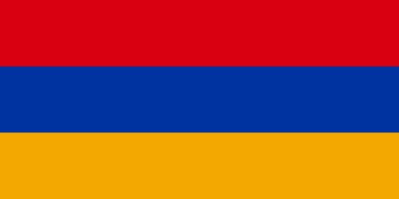
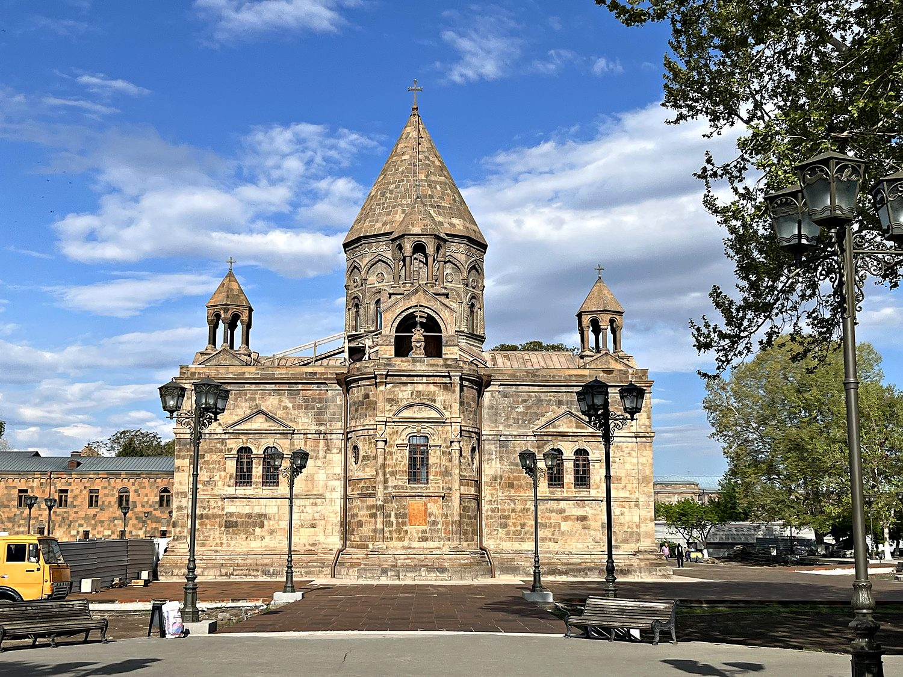
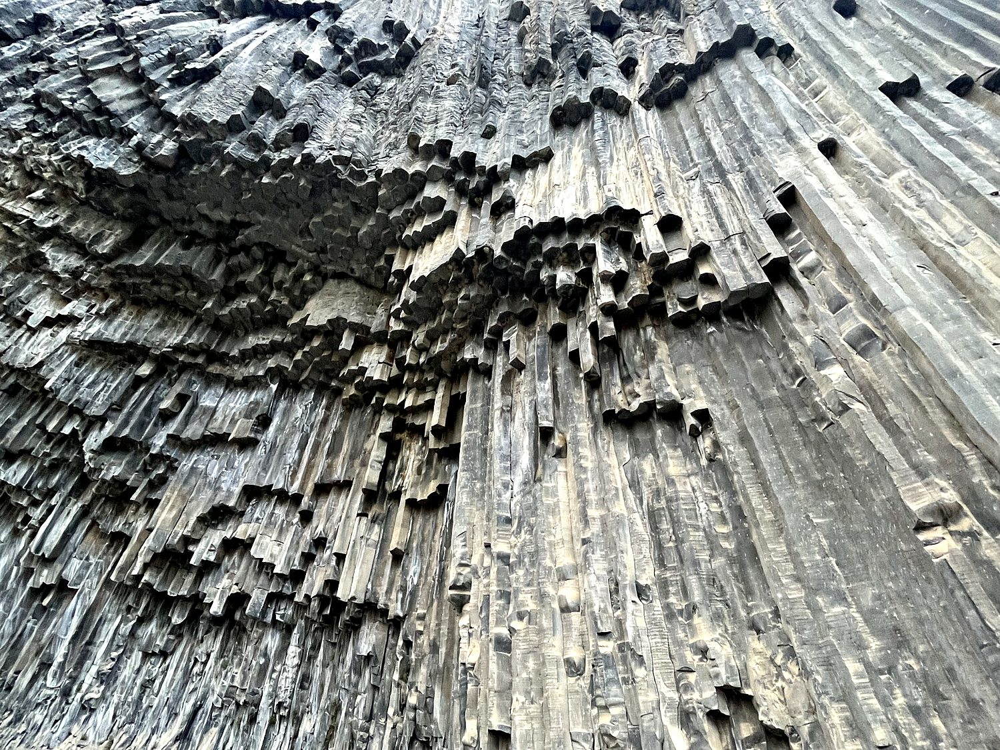
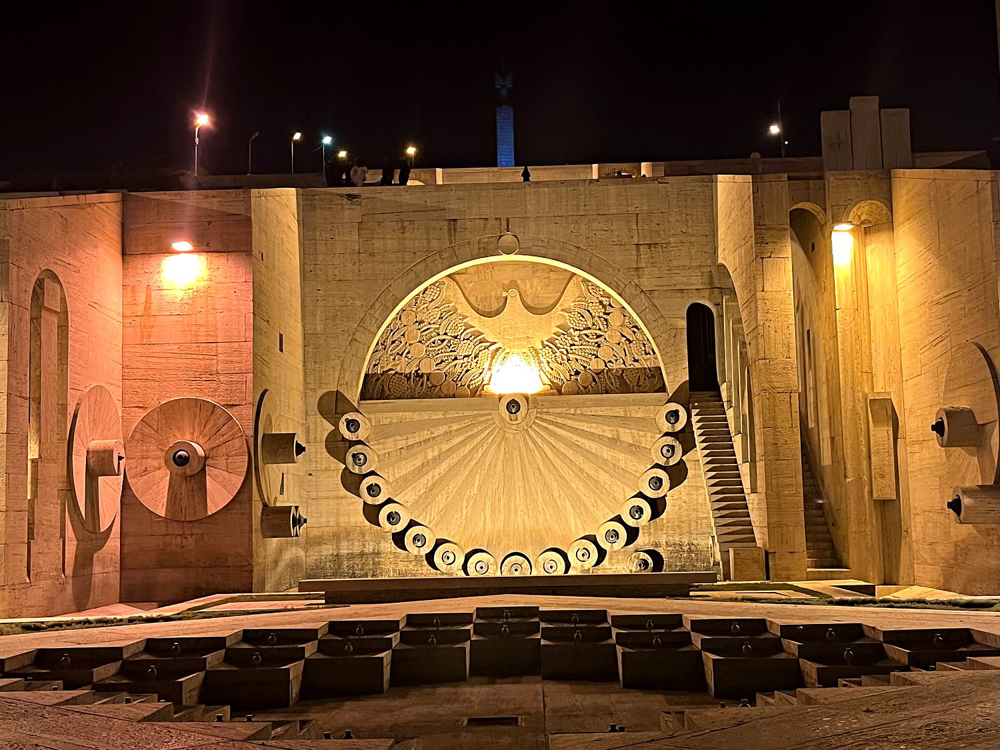

I visited Armenia in April 2023, and of all the countries I have traveled to, few have felt as personal. I carry surname that is probably Iranian, but since it sounds distinctly Armenian, every person in the Armenian diaspora I have met immediately treats me as one of their own and is very welcoming. Visiting Armenia felt like exploring a homeland I had never seen. Armenia turned out to be a country of stone: ancient monasteries perched on volcanic cliffs, ruined fortresses on windswept ridges, and the ever-present silhouette of Mount Ararat floating on the horizon, tantalizingly close and yet just across a sealed border in Turkey. My trip was sobering, exhilarating, and quietly beautiful.
My base was Yerevan, the capital and one of the oldest continuously inhabited cities in the world. It was founded as the fortress of Erebuni in 782 BC, making the city older than Rome. Much of the modern city was rebuilt in the Soviet era in a distinctive pink-and-orange volcanic tuff, giving Yerevan a warm, rosy glow that has earned it the nickname "the Pink City." I climbed the monumental Cascade, a vast limestone stairway of terraces, fountains, and sculptures rising up the hillside, and looked out over the sprawl of the city toward Ararat. From Yerevan I ranged out across the country by rental car, on roads peppered with potholes, threading past Soviet monuments, roadside khachkars (carved cross-stones), and free-ranging livestock. Armenian driving treats lanes as gentle suggestions, and the unpredictability of the roads and traffic probably lowers Armenia’s life expectancy by a few years. Nevertheless, I felt a certain liberating joy in relying on my instinct instead of on the rules while driving here.

Armenia's history is one of the oldest and most remarkable in the world. It was mainly Zoroastrian until 301 AD, when it became the first country to set Christianity as its state religion, a decade before Rome legalized the faith. This happened when Gregory the Illuminator converted King Tiridates III, who had reportedly kept Gregory imprisoned in a pit for thirteen years beforehand. For over 1,700 years Christianity has been central to Armenian identity, expressed by the plethora of monasteries and churches that dot the landscape. Yet Armenia has spent most of that history without full independence, caught between the great empires of Persia, Byzantium, the Ottomans, and Russia. For this reason, its people are scattered into a diaspora that today far outnumbers the population of Armenia itself.

The darkest chapter came during the First World War, when the Ottoman Empire carried out the systematic destruction of its Armenian population in the Armenian Genocide of 1915, in which some 1.5 million Armenians were killed. It remains a defining trauma of the national consciousness and a source of ongoing grief and dispute. Turkiye continues to reject the term to this day. Visiting the solemn memorial in Yerevan was among the most eye-opening hours of my trip. After the genocide, a brief independent republic was swallowed by the Soviet Union in 1920, and Armenia did not regain its freedom until the USSR collapsed in 1991. Independence has been hard: a long and unresolved conflict with neighboring Azerbaijan over the region of Nagorno-Karabakh has shaped the modern nation, which remains a small, mountainous, deeply proud country. Its borders with both Turkiye and Azerbaijan remain sealed shut.
If Armenia was the first Christian nation, then Etchmiadzin Cathedral is its beating heart. It is widely considered the oldest cathedral in the world, with origins dating to around 301–303 AD, right after the country's conversion. Located in the town of Vagharshapat, it serves as the spiritual headquarters of the Armenian Apostolic Church and the seat of its supreme patriarch, the Catholicos of All Armenians, making it something like the Vatican of Armenian Christianity. The name means "the place where the Only-Begotten descended," from a legend in which Christ himself appeared to Gregory the Illuminator and pointed out where the church should be built. Walking the grounds, surrounded by intricately carved khachkars, I felt the quiet weight of seventeen centuries of continuous worship.

Not far from the Temple of Garni, tucked into the Garni Gorge, is one of the most extraordinary natural formations I have ever seen: the Symphony of Stones. These are towering walls of near-perfect hexagonal basalt columns, formed as ancient lava cooled and cracked with almost architectural precision, hanging over the gorge like the pipes of some colossal stone organ. It is the kind of place that looks almost man-made, and it is genuinely humbling to realize that geology, given enough time, can out-engineer any human mason. My companions and I spent a long while simply walking along the base of the cliffs and sitting by the river that runs through the gorge, listening to the water and craning our necks at the columns above. It is a reminder that Armenia's wonders are not only carved by hand and faith, but also by nature.

Back in the capital, the Cascade is Yerevan's most striking modern landmark. This giant stairway of pale limestone climbs the hillside on the northern edge of the center. It is studded with fountains, terraced gardens, and contemporary sculptures from the adjoining Cafesjian art museum. By day you can climb its hundreds of steps (or cheat, as I happily did in part, via the escalators hidden inside) for a sweeping panorama of the city rooftops with Mount Ararat looming beyond. By night, pictured here, the interior halls glow with warm light and quirky installations. It is a place where Armenians and visitors alike gather to sit, talk, and take in the view, and it captures something of modern Yerevan – a city that wears its ancient soul lightly, and knows how to enjoy a good evening stroll.
